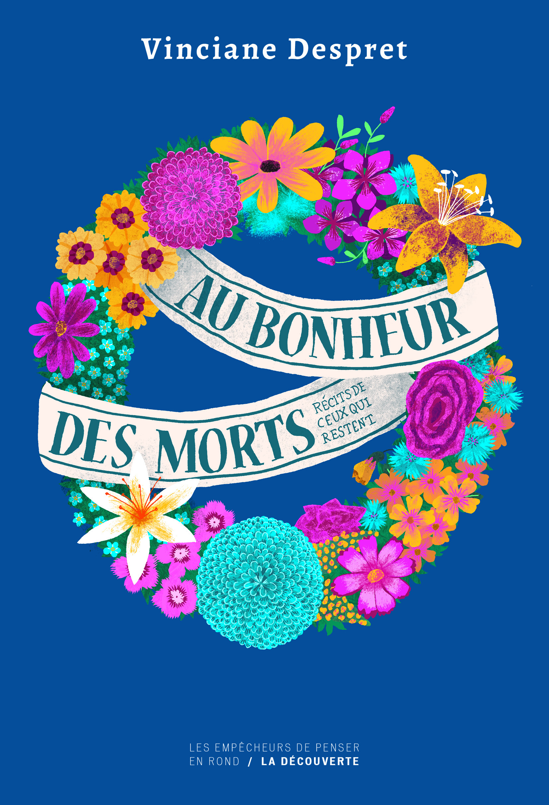

Au bonheur des morts — Viniane Despret
Un essai intéressant et inhabituel, dans un champ très peu exploré

Au bonheur des morts est un essai de la philosophe Vinciane Despret, paru en 2015 sous-titré Récits de ceux qui restent dont la problématique tourne autour de deux questions : comment les vivants s’occupent des morts, et qu'est ce que les morts attendent des vivants. C’est un livre compliqué à lire. Il est dense, il avance par détours, et il demande un véritable effort malgré un côté touchant que j'ai beaucoup apprécié.
La démarche
Despret ne part pas d’une théorie. Pendant un an, elle s’est contrainte à écouter les conseils avisés qu’elle recevait et à recueillir des histoires de gens en rapport avec leurs morts. « Je m’attache à suivre les choses telles qu’elles se présentent », en espérant apprendre de leurs « connivences » et de leurs « frictions ». Il faut partir du milieu et suivre tous les êtres à partir de là. Les histoires récoltées sont bien construites, bien formées, et cela révèle une intelligence particulière des événements : les gens savent raconter ce qui leur arrive, même quand cela dépasse la raison, et il y a là un côté contradictoire avec ce que les courants matérialistes et zététiques laissent parfois entendre, selon lesquels ceux qui croient le font par faiblesse d'esprit (il faut, selon Ricoeur dans un chapitre d'Autour du politique, toujours présumer la liberté d'autrui à adhérer à ses idées).
Le livre entremêle deux récits. L’un est une enquête biographique, plus poétique, sur un événement qui touche sa propre famille. L’autre est une réflexion philosophique. Les deux se répondent tout du long, et c’est ce qui rend la lecture à la fois riche et déroutante.
Prendre soin des morts
L’idée centrale vient de Bruno Latour : toute existence doit être « instaurée ». Si on ne prend pas soin des morts, ils « meurent tout à fait ». Mais cela ne veut pas dire que nous décidons de leur existence : nous les aidons à devenir ce qu’ils sont, nous ne les inventons pas. Le « plus » d’existence que nous leur devons n’est ni celle du vivant qu’ils étaient, ni celle d’un mort muet et totalement absent. C’est une existence autre, sur un autre plan, avec d’autres qualités.
Cela se manifeste concrètement par des rêves, par des sensations fugaces, par des signes. Pour les situer, les morts demandent des soins et des actes, et le livre se propose d’étudier ces manières d’être des morts et ces manières de s’adresser à eux, que les vivants apprennent.
Où vont les morts ?
Il faut leur trouver une place, donc leur en faire une. Despret cite un proverbe : « Les ancêtres ont mangé trop de sel, leurs descendants désirent de l’eau. » Il veut dire que nos désirs ne sont pas ceux d’un individu isolé : ils viennent d’ailleurs, d’avant nous. L’histoire fonctionne de la même façon : un récit en suscite un autre, et l’espace se crée dans le mouvement que l’histoire nous fait faire, à travers les bifurcations vers d’autres narrations.
Le livre fait aussi un détour historique. Au XIIe siècle, il y a une explosion démographique de revenants, liée à l’essor du culte des morts. La messe est alors une conversation avec eux, une sorte de « convertisseur universel ». Aujourd’hui, les fantômes ont disparu, et Despret cherche pourquoi. Le sommeil d’abord : notre culture nous invite à prêter attention à cet espace où l’on frissonne au bord du sommeil, et cela affecte la manière dont on s’en souvient. Le gaz aussi, qui aurait pu produire des états de conscience modifiés.
Ce que les morts attendent
Despret renverse la question. Le spiritisme, ce sont peut-être les morts qui avaient besoin de communiquer avec les vivants. Il n’y a pas de frontière précise entre les deux mondes, il y a, selon Maurice Bloch, des « brèches dans l’opposition de l’être et du non-être ». Les morts désirent être souvenus. S’ils s’obstinent à rester, c’est qu’ils attendent quelque chose de nous : ils avertissent, font des demandes, et font même circuler des biens par l’entremise des vivants, preuve de leur générosité. Certains morts hébergent dans les cimetières des enfants qui n’ont pas le statut de défunt. Toutes les cultures où les morts comptent ont des médiations avec eux : les rêves, les médiums.
Le passage sur les organes est le plus troublant. Despret parle de prélèvement et non de don, car le don suppose un processus actif et personnel. On peut refuser de donner ses yeux, car si le mort revient, que pourra-t-il faire sans eux ? On oblige les vivants à statuer sur la volonté des morts, et s’ils se trompent, il s’agit peut-être d’un vol. L’organe prolonge la vie du défunt autant que celle de celui qui le reçoit, et le livre évoque des témoignages de personnes dont la personnalité a sensiblement changé après une greffe.
Une histoire embriquée
C’est le fil le plus personnel. Le frère du père de Despret est mort dans un accident de train. Au fil de l’enquête, elle rêve de cet oncle, George. Son fils et elle découvrent qu’ils ont rêvé le même jour, le 15 février, et que les deux rêves se complètent et s’imbriquent. Elle ne cherche pas à l’expliquer : elle en fait un point de départ.
Elle en tire une idée sur les signes. On pense qu’ils nous rendent heureux parce qu’ils créent le contact avec celui qui manque. Despret trouve cela vrai mais très partiel : un signe atteste et crée à la fois un autre rapport au monde, une rupture qui instaure des connexions inhabituelles. Les signes sont pluriels, à la fois une interprétation consciente de notre part et une ressemblance indéniable avec le défunt. Le sentiment que notre pensée vient de nous seuls se défait quand on communique avec les morts : on remet en cause la théorie de l’esprit qui l’accompagne.
Elle en tire aussi une idée sur le deuil, qu’elle ne veut pas dépasser mais cultiver. Elle l’a compris après avoir fait l’expérience d’un dispositif spirite, dont les pratiques sont consolatrices. Elle critique le regard de ceux qui y voient une pathologie de la douleur plutôt qu’une éducation du deuil. Le mort est à la fois présent dans le présent et inscrit dans une longue temporalité : il est là, derrière moi, et on l’imagine vieux, jeune, figé dans une boucle.
Le « comme si »
C’est certainement le passage le plus intéressant. Despret s’interroge sur la façon dont on perçoit les histoires irrationnelles. Ceux qui les racontent utilisent souvent un « comme si », qui semble les protéger d’une accusation de folie. Mais dès qu’on leur dit « je ne vous prends pas pour une folle », le « comme si » disparaît et l’histoire devient réelle. Pour Despret, le « comme si » n’est donc pas un retrait ni une prudence, mais un artifice qui permet d’affirmer et de maintenir activement plusieurs possibilités. Il n’oppose pas l’imaginaire au non-imaginaire : il place la focale sur un point flou, un entre-deux. La culture elle-même repose sur la coexistence de versions contradictoires, qui participe à la fabrication d’histoires. Avec Barthes, elle voit dans l’histoire la mise en scène d’apparitions et de disparitions, qui appelle une suite et d’autres histoires. D’où la phrase qui résume le livre : les morts font des vivants des « fabricateurs de récit ».
Mon avis
C’est un livre exigeant, que je ne recommande pas pour une lecture rapide. Il demande du temps, et certains passages (Latour, les modes d’existence) m’ont paru difficiles. Mais j’en retiens l’idée, très belle, que les morts ne sont pas absents, et que nous leur devons quelque chose. La fin, que je ne dévoile pas, est jolie : Despret y retrouve son propre deuil et clôt habilement le récit sur une touche nostalgique et mélancolique, sinon triste.